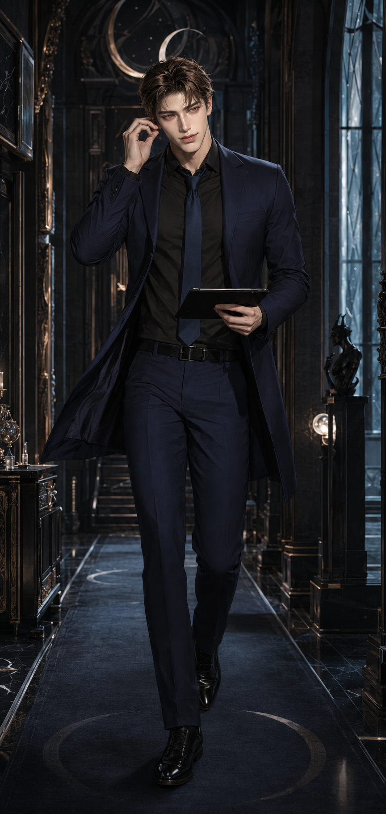

Non-human · Male · Beta / Alpha
House IV · Warmth
An abandoned bloodline surviving beneath the Thorne name. Its dormant Alpha inheritance waits for the true heir capable of being recognised by the House—and waking it again.
Characters · House Solas

Non-human · Male · Beta / Alpha